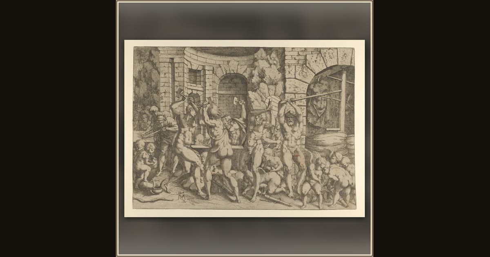

Vulcan's Forge
Attributed to Master of the Story of Cadmus · ca. 1542–45 · met
An etching of Vulcan's forge shows smiths swinging hammers beside a furnace; their metalworking recalls the crafts the hymn says people learned through Hephaestus (5). Explore its place in Homer's The Homeric Hymns, Hymn 20 · To Hephaestus, line 5.